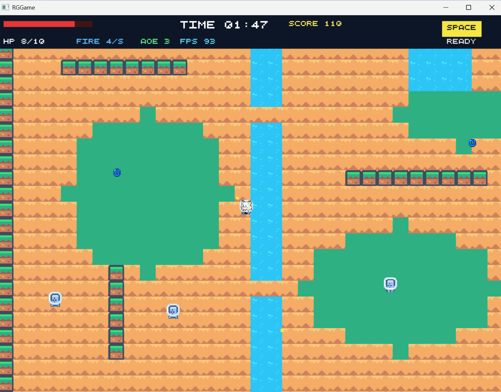

C++ · Gameplay Systems · Coursework Prototype
WM908 Survival ShooterWM908 生存射击原型
A C++ top-down survival game made for WM908. I implemented combat, enemy spawning, pickups, scoring, cooldown skills and save/load, with both fixed and infinite map modes.WM908 课程中用 C++ 制作的俯视生存游戏。我实现了战斗、敌人生成、拾取物、得分、冷却技能和存档读档，支持固定地图与无限地图两种模式。
Public release in preparation公开版本整理中